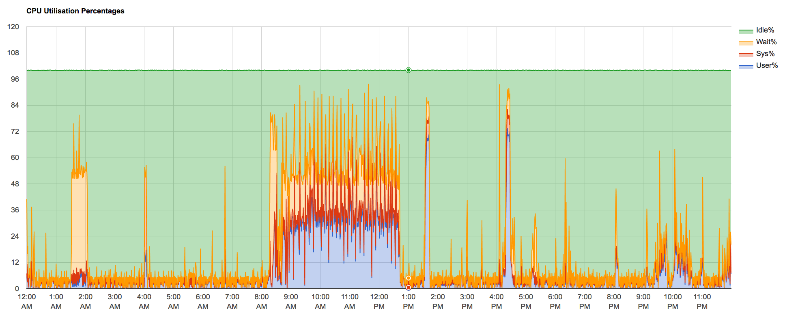

{
"published": true
}Curious if a persnickety OAI server was behaving the tail-end of last week, and over the weekend, I checked on some system monitoring I'd setup awhile ago using the supremely handy nmon library, and the visualizing accompaniment nmonchart. I encountered the following graph:

Despite all the activity, this confirmed to me that the OAI server did not have the CPU pegged. But, what I found even more interesting, was that it showed quite precisely when I ran a full index of objects in Fedora to Solr: 8:16am to 12:43pm.
While I didn't need to know this information, per say, I was struck how much of our activities as humans, and activities on behalfs of processes, can be easily divined from CPU metrics. This is an incredibly rough analysis, of course, but always delight in the insights from data.